CausalSplat：面向 3D Gaussian Splatting 的综合层次推理CausalSplat: Towards Comprehensive Hierarchical Reasoning in 3D Gaussian Splatting
对语义地图和具身空间推理有明显价值，并提供新 benchmark；与几何 SLAM 的关系间接，scene graph 成本与在线扩展能力待核查。
一句话工作总结
用 3D scene graph 承载显式空间结构、VLM 处理隐式逻辑，扩展 3DGS 语义地图的层次推理能力。
摘要
CausalSplat 将开放词汇 3DGS 场景理解扩展到隐式意图、复杂空间约束与 commonsense reasoning。作者提出 reasoning 3D Gaussian segmentation 任务，并构建 Causal-LERF 与 Causal-ScanNet，覆盖常识、空间、affordance 和 counterfactual reasoning。框架使用 3D scene graph 与 vision-language model，将显式结构感知和隐式逻辑推断解耦；摘要称其在新 benchmark 上达到 state of the art，并能泛化到标准 referring 与开放词汇三维分割任务。
While 3D Gaussian Splatting (3DGS) has advanced open vocabulary scene understanding, existing methods remain confined to explicit queries. They struggle to interpret implicit intents, complex spatial constraints, and commonsense reasoning required for practical embodied interactions. To address this gap, we introduce the task of reasoning 3D Gaussian segmentation and construct two benchmarks, Causal-LERF and Causal-ScanNet. These benchmarks systematically evaluate commonsense, spatial, affordance, and counterfactual reasoning. Evaluations reveal that current state of the art methods perform poorly on these reasoning challenges. Therefore, we propose CausalSplat, a framework that integrates vision-language models with 3D scene graphs to disentangle explicit structural perception from implicit logical inference. Extensive experiments demonstrate that CausalSplat achieves state of the art performance on our reasoning benchmarks while showing strong generalizability on standard referring and open vocabulary 3D segmentation tasks. Project Page: https://jiayuding031020.github.io/CausalSplat
中文解读摘录
- 价值：把 3DGS 开放词汇理解从显式指代扩展到 commonsense、spatial、affordance 与 counterfactual reasoning，并发布 Causal-LERF、Causal-ScanNet 两个 benchmark。
- 方法：以 3D scene graph 显式承载结构感知，再由 vision-language model 处理隐式逻辑推断，分离 perception 与 reasoning。
- 关注点：与 SLAM 的直接关系较弱，但对语义地图和具身空间推理有价值；需检查 benchmark 的人工偏差、scene graph 构建成本，以及动态在线地图中的可扩展性。
- 链接：arXiv · PDF · 项目页
图表/页面预览

{kind=link}
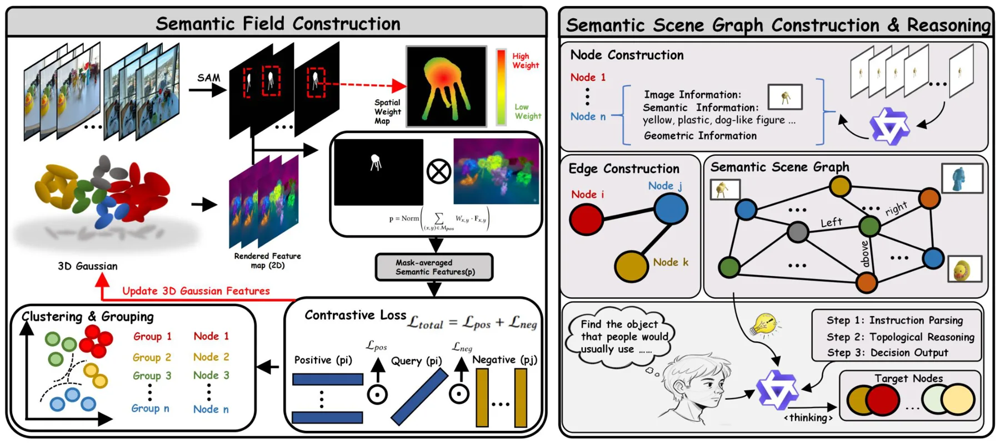
{kind=link}
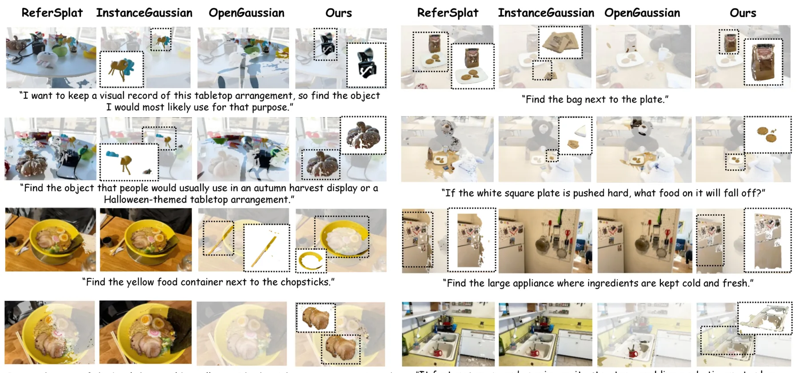
{kind=link}
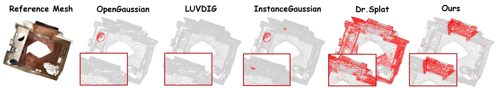
{kind=link}
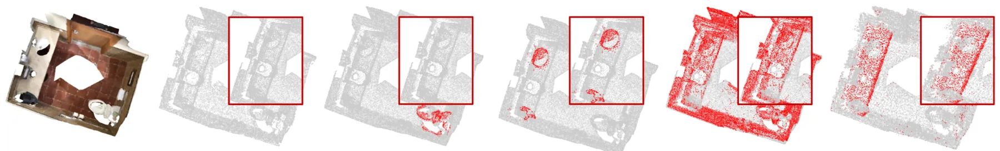
{kind=link}
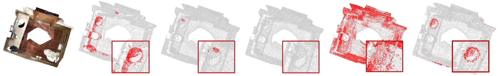
{kind=link}
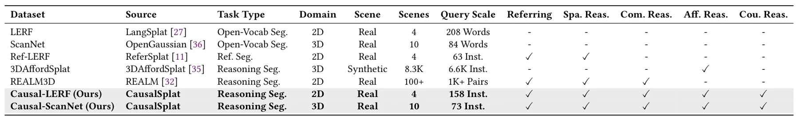
{kind=link}
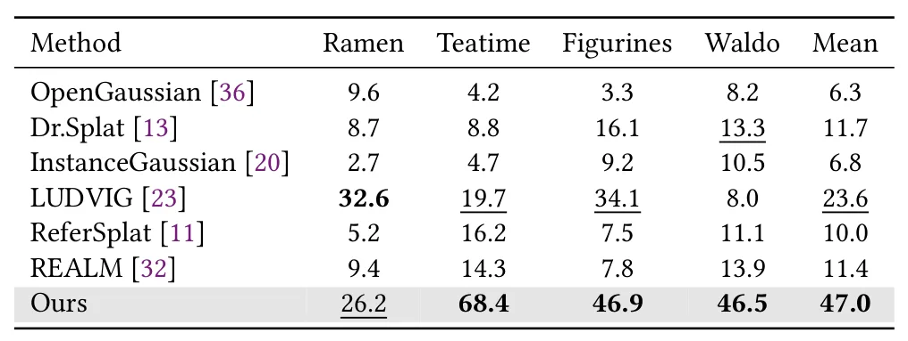
{kind=link}
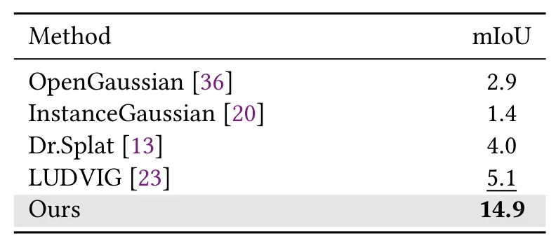
{kind=link}
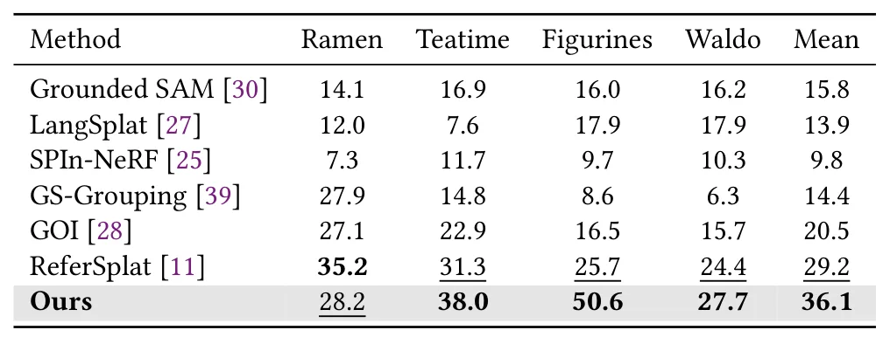
{kind=link}
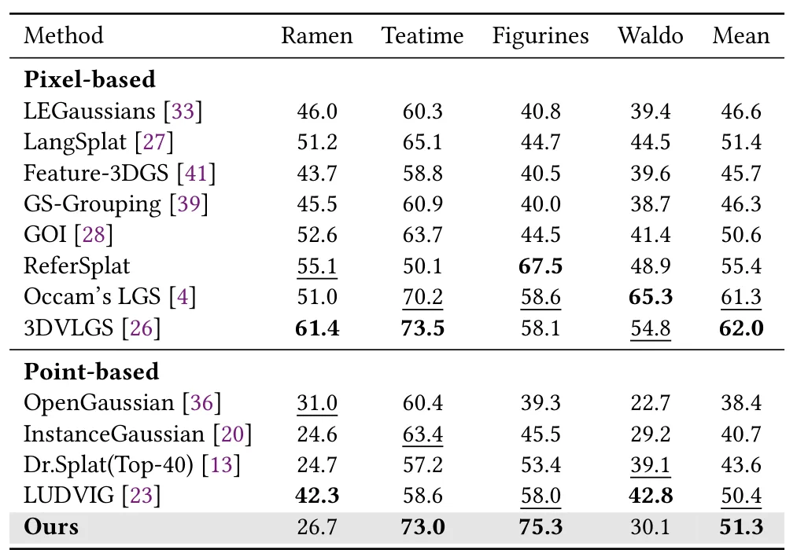
{kind=link}
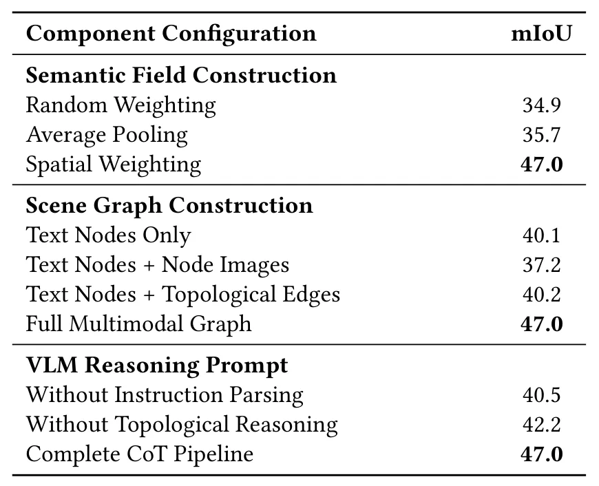